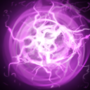
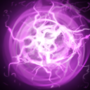
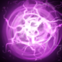

Skills
 



Na sua mais primitiva e, diriam alguns, mais potente forma, a magia era basicamente a arte da memória. Não demandava tecnologia, nem cajados ou qualquer artifício além da mente do mago. A simbologia dos rituais é apenas um recurso mnemônico, para que o praticante lembre com detalhes a exata fórmula mental de um feitiço. Naquele tempo, os maiores magos eram aqueles agraciados com as melhores memórias e as invocações eram tão complexas que os magos eram obrigados a se especializar. O mais devoto podia esperar lembrar, durante a vida, de três, quatro feitiços no máximo. Magos normais contentavam-se em saber dois; e não era difícil um mago de aldeia saber apenas um e ainda assim precisar consultar grimórios como ajuda para relembrá-lo nos raros casos em que era requisitado usá-lo. Mas dentre os antigos praticantes havia uma exceção, um gênio de amplo intelecto e memória pródiga que seria conhecido como Invoker. Quando jovem, o precoce mago dominava não quatro, nem cinco, nem mesmo sete encantos: ele dominava nada menos do que dez feitiços e lançava-os instantaneamente. Ele aprendeu muitos outros, porém inúteis, e praticava-os apenas uma vez para então limpá-los da sua mente, deixando espaço para os mais úteis. Um destes foi o Encanto sempiterno – um feitiço de longevidade tão poderoso que aqueles que o usaram nos primórdios do mundo ainda estão entre nós (a não ser que tenham sido reduzidos a átomos). A maioria desses quase-imortais vivem em sigilo, com medo de admitir os seus segredos, mas o Invoker não é do tipo que esconde os seus dons. Ele é ancestral, aprendeu mais que todos e, de alguma forma, na sua mente ainda cabe um imenso senso do seu próprio valor, assim como as invocações que vêm entretendo-o durante o longo e demorado crepúsculo que eram os dias restantes do mundo.
Skills

Nos Campos da Carnificina Perpétua, ao extremo sul de Quoidge, uma figura corpulenta trabalha incessantemente noite afora – desmembrando, eviscerando, empilhando os membros e as vísceras dos derrotados para que o campo de batalha esteja limpo ao amanhecer. Nesta região amaldiçoada, nada se deteriora ou decompõe; nenhum cadáver jamais poderá regressar para a terra de onde surgiu, não importa o quão profunda seja a sepultura. Rodeado por aves carniceiras que precisam dele para cortar as suas refeições em nacos pequenos o bastante para os seus bicos, Pudge, o Butcher, um açougueiro que aperfeiçoa a sua perícia com lâminas as quais quanto mais são usadas, mais ficam afiadas. Dois cortes rápidos e ouve-se o baque surdo da carne caindo do osso; tendões e ligamentos partem-se como papel molhado. E, apesar de sempre ter tido um gosto pela carnificina, Pudge desenvolveu também, ao longo do tempo, um gosto pelos subprodutos dela. Começando com um bocado de músculo aqui, um trago de sangue ali... e em pouco tempo ele estava fincando profundamente as suas mandíbulas nos torsos mais duros, como um cão que rói trapos. Até aqueles que já não temem o Ceifador, temem este açougueiro.
Skills


"Se você quer mesmo saber, na vida o importante é quem você conhece e o que consegue encontrar. Quando se vive nas Ruínas de Crevasse, até encontrar comida pode ser difícil. Então você precisa pegar atalhos, mendigar, saber no que é bom. Algumas das feras que vivem lá podem te matar, então você precisa achar uma maneira de emboscar os fracos e se esconder dos fortes. Pelo lado positivo, as ruínas têm história, e história vale muito para alguns. Costumava existir um palácio aqui, onde eles tinham todos esses rituais sombrios. Coisa da pesada. Se você sobrevivesse à cerimônia, eles quebravam um cristal e dividiam a sua alma em vários pedaços. Se bem que a arte deles era belíssima! Esculturas e coisas do tipo. Vou te falar: às vezes você tropeça em umas daquelas velhas inscrições. Leve uma mochila cheia delas pra cidade e venda tudo, então consiga comida para algumas semanas. Se você tiver sorte, você pode encontrar um cristal de Crevasse. Peça para ele ser avaliado e comece a perguntar por aí, pois alguém sempre conhece algum rico maluco por esse tipo de coisa. Se tudo isso falhar, venda-o a um Magus da próxima vez que algum estiver na cidade. Eles amam essas coisas. Porém, não importa o que faça, tenha cuidado ao lidar com esses cristais. Você não quer que um desses quebre na sua cara. Dói pra caramba."
Skills